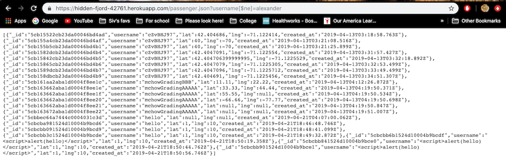
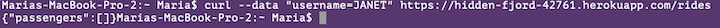
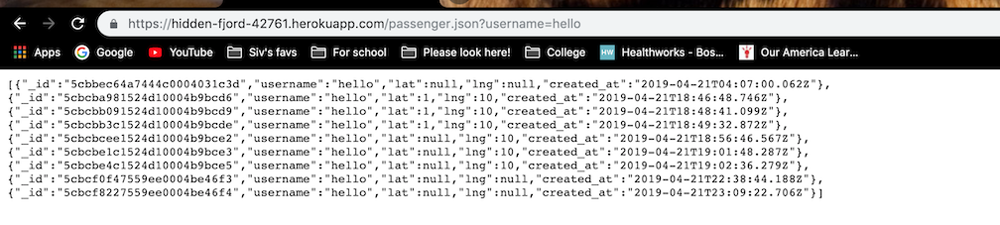

The product is a service that matches passengers to vehicles and vehicles to passengers. It takes in user input to determine whether the user is a passenger or a vehicle, stores the information in a database and returns the corresponding data. The database stores an identifier for each input as well as the location that is provided by the user. My purpose is to identify any weaknesses in the product that will leave it vulnerable to unwanted alterations by malicious users or allow users access to information that they do not have permission to access.
In order to test the product, I first tested all the different areas that accepted user input by inserting scripts or commands. Whether it was username input or other information. Then I looked for ways to extract the source code, to see any bad coding practices that might be hidden in the code. I specifically looked for different ways that users could access unauthorized data and get the location of other users.
The privacy and security issues found were the ability to access information of other users, ability to input incomplete information for a single user, an accessible password to the all the information and a way for users to access information about other users without any passwords or other verification processes.
Issue: Injection, allowing user access to information about other passengers or drivers, user has access to information that they do not have permission to access.
Location: Within the get /passenger.json route, inputting a username
Severity of issue: High, this is a breach of personal privacy and information, as the stored data has a location and the time of access.
Description of issue: The user is able to encode the username key in order to make the program return all passenger information in the database that is not under that username.
Proof of vulnerability:

Resolution: You could take the username and manually check it against all the usernames within the passenger collection.
var username = request.query.username;
db.collection('passengers', function(error,collection){
if(error){
response.send(500);
}
if(!error){
collection.find().toArray(function(error,results){
if(!error){
var output;
for(var count = 0; 0 < results.length; count++){
if(username == results[count].username){
output += JSON.stringify(results[count]);
}
}
}
});
}
}
Issue: Bad programming practices
Location: Within the code in the post /rides route, inputting latitude and longitude
Severity of issue: Low, when an input is given, it will be changed into a number, but it is not a required part of the input. Unless longitude and latitude are strictly defined it creates a place for malicious code to enter.
Description of issue: Latitude and longitude are not required to be floats and are not required to be inputted as part of the post path. This can create problems in trying to display the data on a map if there are enteries without a longitude and latitude.
Proof of vulnerability:

Resolution: Add lines that checks that the inputs are not undefined:
if(la === undefined || ln === undefined){
response.send("error: Whoops, something is wrong with your data!");
}
Issue: Bad programming practices
Location: Hard Coded password within source code
Severity of issue: High, with the hard password, it is possible for a user to access the database behind the service and gain access to all the information of all the users.
Description of issue: The password for the database storing the information for the service is hard coded into the source code. The password can therefore be accessed if the source code is found.
Proof of vulnerability:
Resolution: Remove the hardcoded portion of the mongoURI and simply have the other environments.
var mongoUri = process.env.MONGODB_URI || process.env.MONGOLAB_URI || process.env.MONGOHQ_URI
Issue: Bad programming practices
Location: The returning of all the information of any given passenger when you input their username in the passenger.json GET path
Severity of issue: High, this allows users to access information of any other passenger as long as they know their username. Information that can be easily accessed include sensitive information such as location and the time at which the user was at that location.
Description of issue: The service is designed to easily return all of the information of a passenger if you input the username into the passenger.json pathway. All information under that username is returned with no other verification required.
Proof of vulnerability:

Resolution: Require a password or some sort of identification in order to verify that the user has permission to access this information, such as checking the cookies of a user.
There are very few security problems and the ones that are included in the code are quickly and easily fixable with either a validator or with a few lines of code. Since the service is working with private information, that if mishandled would cause a lot of problems with users. While the problems are easily fixable they would be very detrimental if left unsolved and it shows how important good secure code is.
Class lecture notes
For page margins: https://www.w3schools.com/cssref/pr_margin.asp
For font size: https://kyleschaeffer.com/css-font-size-em-vs-px-vs-pt-vs-percent
Center aligning text: https://www.w3schools.com/css/css_align.asp
Text style: https://www.w3schools.com/css/css_text.asp